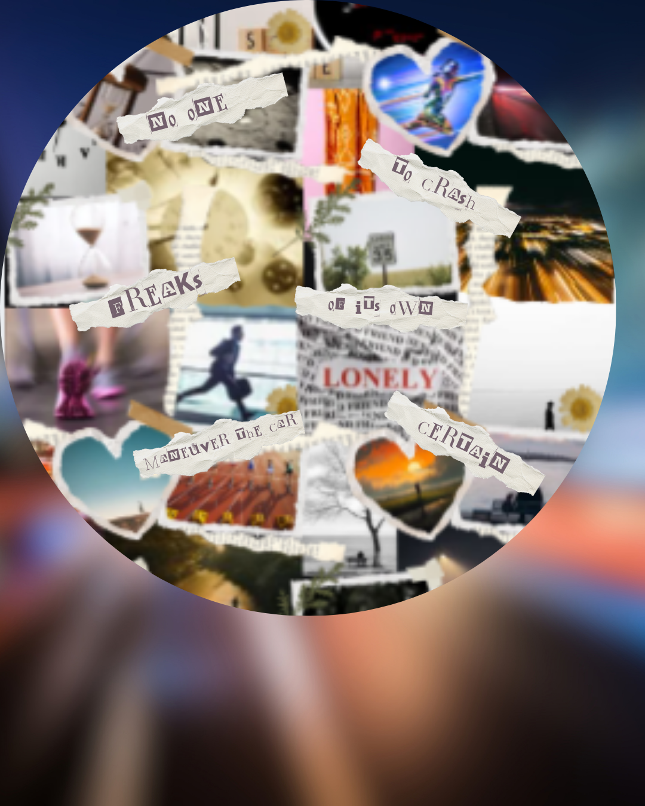
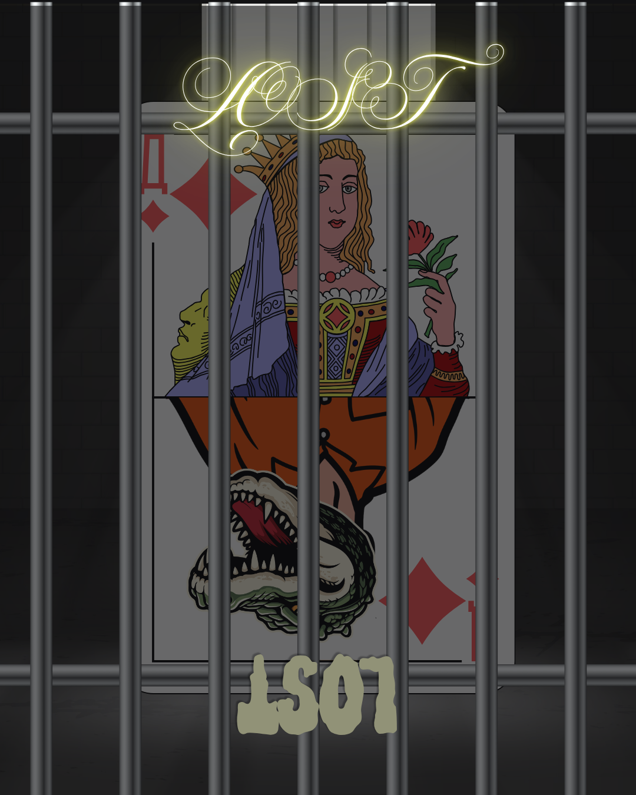
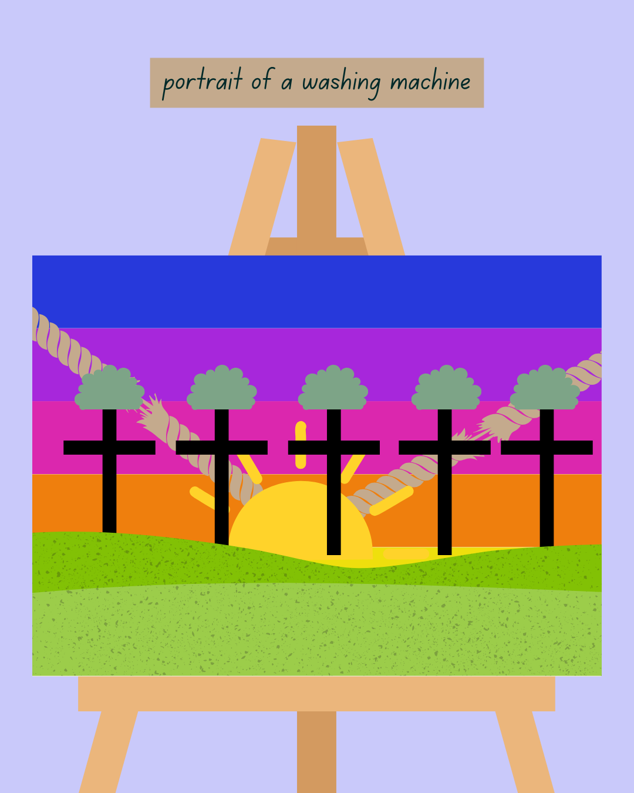
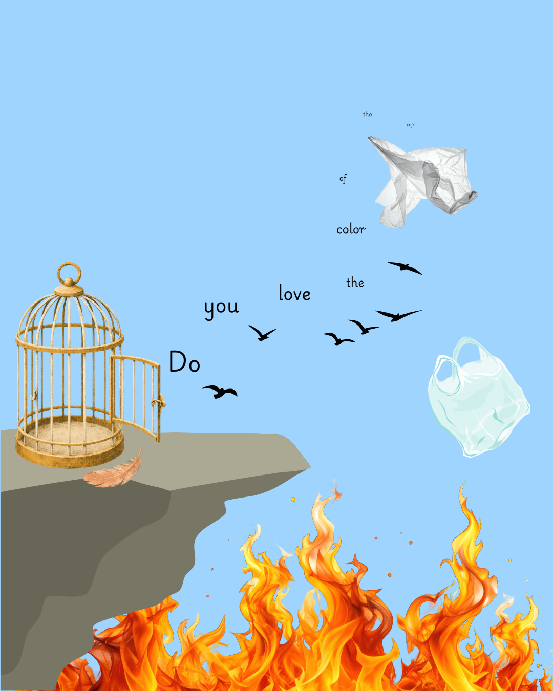
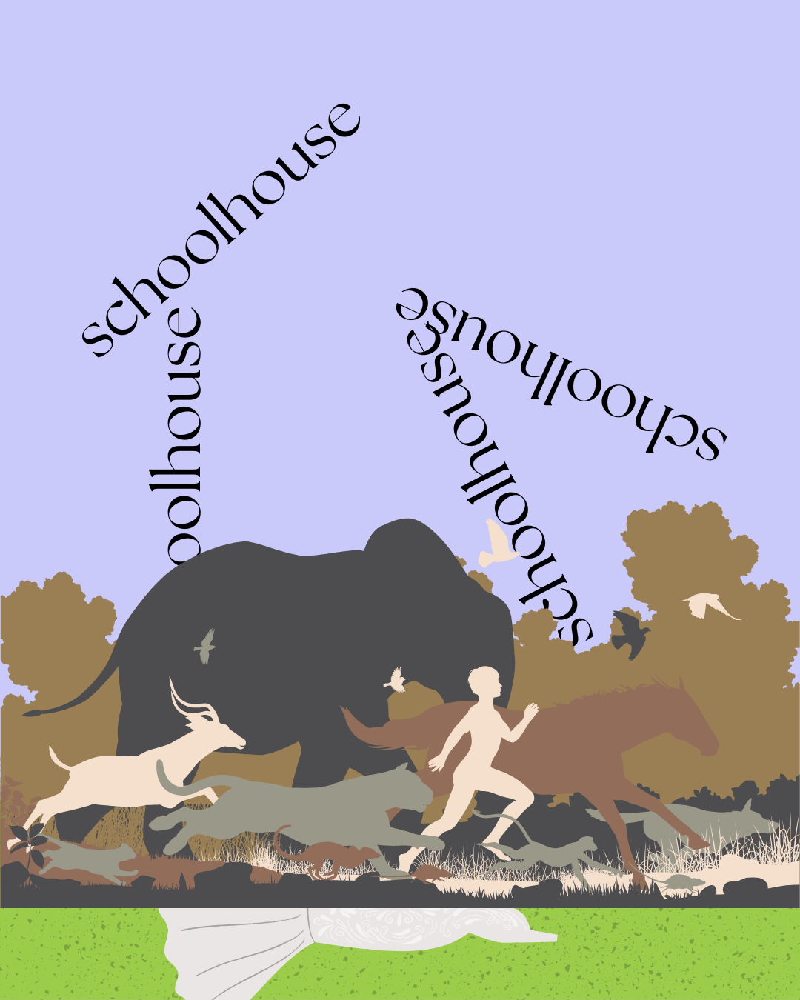
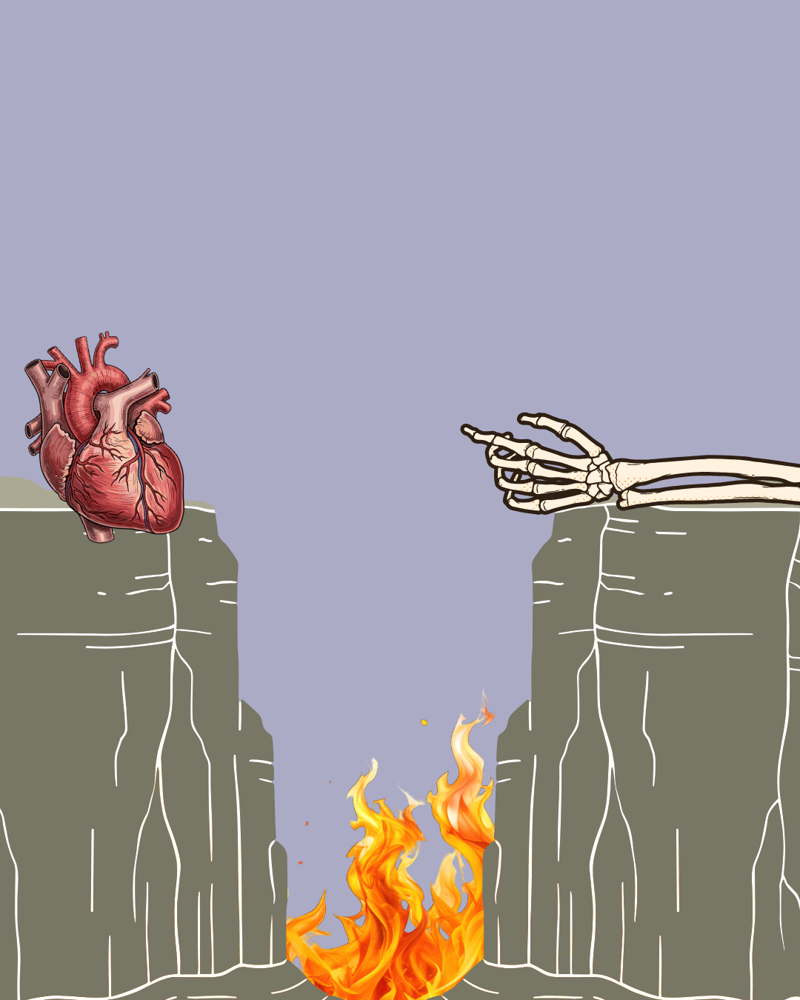
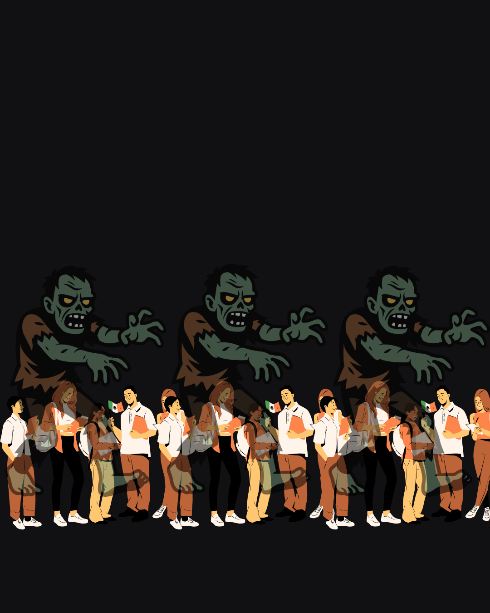
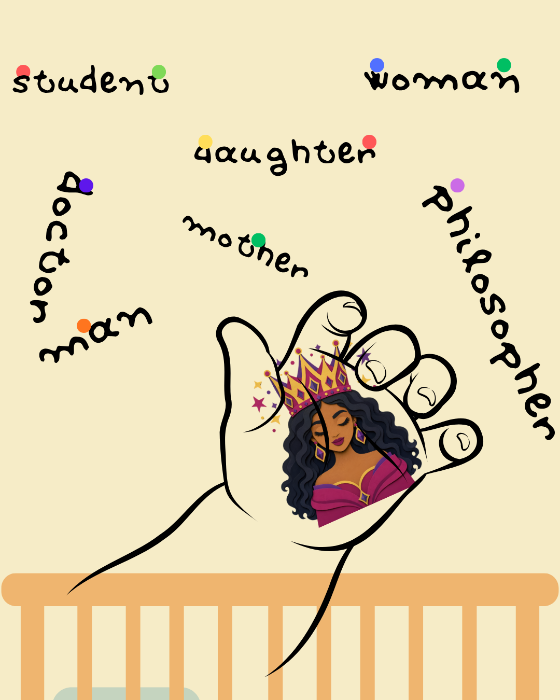

1 / 8

Recurring: I’m usually either late to arrive somewhere or I am running away from something. I have to drive on my own because no one else knows or wants to, so I figure out how to maneuver the car by myself. While driving I’m going incredibly fast and I lose control of the car. I never hit anything but it freaks me out because the car begins to develop a mind of its own and I’m certain I’m going to crash.
2 / 8

September 23, 2023: I was in the elf world of the Keeper of the Lost Cities book series. My family was there, alongside one of my classmates (from the Global ecology program). I don’t remember which classmate it was. Me and my classmate had just gone to the elf world from the human world and were telling the elves information about humans and their lifestyles as part of an undercover mission. I was comfortable with humans and preferred humans over elves but my classmate’s loyalty was fully towards the elves, so within their conversation the classmate was telling details about humans and exaggerating them to make humans seem worse than they are, and acting like elves were much better. This classmate also seemed to not care much about human social and environmental issues and mocked those who do. I had to pretend I agreed with them because I was working for the elves as part of the mission, but I actually disagreed and felt that the elves were wrong and that they just didn’t understand, but I didn’t have the power to say anything. I was really confused because I assumed that the others who had been in the human world wouldn’t be so judgemental, but they actually were and I was the only one who felt solidarity and empathy with humans amidst the others’ mockery that I had to force myself to agree with.
3 / 8

November 24, 2023: I had a dream that I was at some church camp with a bunch of people I know. I was originally not going to participate in the camp but I saw many people that I know there so I joined them. I spoke to Divine and some other people. It felt very performative, like I was playing a role for the benefit of other people and not myself.
4 / 8

December 30, 2023: I was in a fancy private school and was kind of struggling. They were talking about synergy studentvue and stuff like that. There was a test that i was supposed to complete but i only got to eight questions. After school some people got into fights. I tried to compare guys fighting (more aggressive) with girls fighting (more tame) but it turns out that they were similar. The guys were pushing and shoving and calling each other stupid but no one got in trouble for it. The girls were also calling people stupid but one girl got in trouble and the teacher chewed her out. This was outside in a football field/stadium and i was there to watch it happen and the teacher told the girl to apologize but the girl just walked away. The teacher started yelling at her to come back ro else she’ll get expelled but she just got up and started running to meet her other friend who hugged her. Then as she was running she turned into a bird and started flying. A bunch of guys then decided to catch her by running after her and climbing on bleachers, buildings, and other structures to catch her. One guy did it and fell off. When he landed on the ground his body decomposed immediately. Another guy went up and then got burnt by the sun because he tried to get too high (i was informed of this by grace yeung). More and more people tried to run and climb on things to catch the bird but she kept getting away. Then poolesville students started arriving, such as kellen, will, vashist, noah(? I think its his name), kishna, gina, and some others. They all tried to catch her but no one could until the bird got tired and started drooping lower. By then it was no longer a bird because it transformed into a plastic bag of some sort (like a bag of chips or something) but we all knew it was still a bird?? So someone caught it and everyone cheered and music started playing
5 / 8

March 28, 2024: There was a zombie apocalypse at poolesville hs (seems like this has happened more than once). Everyone was scared and I was in ms clowe's classroom where there were three doors. The door to the outside was locked good but the other two doors could be opened by force. We had to stay at school really late but the zombies could apparently detect technology so we had to keep our devices on silent and couldn't text anyone. I couldn't text my parents and we stayed at school until 10:30pm so they were probably terrified. Then I went home but apparently I was supposed to still be at school because they continued the school day after the apocalypse was over so I went back to school. Halfway on the way back to school I had to leave the carriage we were in and walk all the way to school while my mom rode in a carriage. Then at school I realized that the school day was continuing and everyone was there and I was embarrassed to be wearing a fancy dress
6 / 8

April 20, 2025: The students at school were given the choice between giving up their soul to the demon and dying right then or writing a paper on why they should stay alive but bewitched by the demon. I impulsively chose to die as did Daniel and Jessika who did not want to be alive anymore but later on i began to regret my mistake especially as I had no idea when I would die that day, if it would be in my sleep, etc. school ended early that day and all the students who chose to die took time to say bye, i took two lollipops from ms clowe and i learned that lillian had chosen to stay alive. She was the only one i saw that did so i told her i really appreciated her but i was kind of running out of time before the bell rang so i said that if there is a heaven i hope she’s there because she is heaven. Then i left to get on the bus, not taking any of my stuff because i figured i’d be dead soon anyways. However I decided to go back and get my things like my phone and bag and I saw lillian and jessika again and wanted to say bye again and gathered my stuff. While there mr leong suddenly shows up to talk to the kids that are still alive about the importance of the AP test. I say bye to him too and inform him that I am about to die and he says he’s glad before amending that they will miss me. However when I leave the room I go downstairs into my living room and tell my grandma that I got new shoes and she asks why I’m not wearing them so I go back and put them on
7 / 8

August 2026: Dreamt I was ugly. I was so ugly that when walking around outside Seneca Valley high school everyone from my Astrazeneca internship saw me and couldn’t look at me. They all hung out together and were tight but when it came to me no one could look at me and everyone avoided me because of how ugly I was and no one wanted to be my friend. Eventually I got married and then cheated on because I was ugly.
8 / 8

August 15, 2026: Me, grandma, and elysee were in the family room at home at around 4am. Suddenly the front door was banged on super aggressively like someone was desperate to get inside. We were confused as to why anyone would do so at 4am but my grandma went to open the door and we found no one there but an abandoned baby on the doorstep who we had to take in. We decided we needed to adopt this baby so we brought it in and she could speak in full and complex sentences for some reason. So while holding this baby I started talking to her about my college applications. I told her that I wanted to do a double major in neuroscience and philosophy and the baby was aghast and told me all philosophy was was just men speculating on the meaning of life. I told the baby this is not true and there are different subfields like aesthetics, ethics, metaphysics, epistemology, etc. The baby suddenly started growing up into a toddler and then a kid and also changed races.
❮
❯